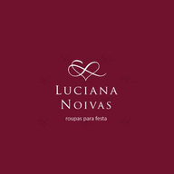

Primeiro acesso? Use a senha padrão informada pela gerência.
📲
Instalar o appFica na tela inicial e abre mais rápido
Crie sua senha
É seu primeiro acesso. Troque a senha padrão por uma senha só sua (mínimo 6 caracteres).
Termo de consentimento
Para registrar o ponto, este aplicativo usa reconhecimento facial e a localização do celular.
Autorizo o uso da minha biometria facial (um código numérico gerado a partir das minhas fotos) e da minha localização exclusivamente para o controle de ponto, conforme a Lei Geral de Proteção de Dados (Lei 13.709/2018).
A foto de cada batida é guardada para auditoria e só o administrador tem acesso. Os dados não são compartilhados com terceiros e serão apagados quando eu sair da empresa.
Posso pedir informações ou a revogação deste consentimento ao administrador a qualquer momento.
Cadastro do rosto
São 3 fotos rápidas, em lugar claro e sozinho(a): 1 de frente, 2 virando o rosto levemente para um lado e 3 para o outro lado. A câmera tira sozinha quando estiver certo. Fotos em ângulos diferentes deixam o reconhecimento mais seguro no dia a dia.
1
2
3
--:--
📲
Instalar o appBata o ponto direto pela tela inicial
Meu histórico
Banco de horas: | Saldo do mês:
Solicitar abono
Envie o atestado ou a declaração. O abono só entra no seu ponto depois de aprovado.
Minhas solicitações
Menu
Batidas do dia
Solicitações de abono
Colaboradores
Novo colaborador
Espelho de ponto
Troque a pessoa ou o mês e o espelho aparece sozinho. Os já abertos ficam guardados e abrem na hora.
Sugerir ajuste a partir demin a mais ou a menos
Ajustar ponto
A batida original nunca é apagada: ela fica marcada como substituída e tudo vai para o Log.
1 h2 h4 h8 h−1 h
Para ver todos os tipos, o que cada um faz e criar novos: Configurações → Tipos de ajuste.
Regras do ponto
Valem para todos. Salário, passagem e desconto de cada pessoa ficam em Colaboradores; endereço e raio, em Loja. Mudanças de valores recalculam o fechamento na hora.
Jornada padrão (horas por dia)
Senhas
Troca a senha de quem está usando o admin. Mínimo de 6 caracteres e diferente da senha padrão.
Feriados e dias sem expediente
Feriado não conta como dia útil no cálculo do valor do dia e não gera "sem registro".
Tipos de ajuste
Cada cartão mostra, em uma linha, o que o ajuste faz com as horas do dia, o banco de horas e o pagamento. Toque no interruptor para ativar ou desativar; em Editar você vê uma simulação com a jornada real (8 h; sábado 4 h · mudar jornada).
1
2
1 h2 h4 h8 h−1 h
3
4
"Paga o dia" é para dias sem batida (falta abonada, folga). Dia com batida já é pago pelas batidas.
🔒
Tipo especial do cálculo (batida de horário ou observação): dá para mudar nome, textos e sugestões, mas não as regras.
5
Batidas recusadas (30 dias)
Fechamento
Clique no + para ver os dias do colaborador. Dias com alerta são oportunidades de ajuste.
Escala 5x2 · fim da 6x1
Analisando as batidas reais dos últimos meses...
🏖 Férias (calendário e regras da CLT)
Calendário
As férias ficam salvas neste aparelho (use o CSV para guardar/levar). A escala abaixo já considera quem está de férias.
Movimento, equipe e funções (preenchido a partir das batidas, pode ajustar)
🔄 Escala por turnos (vários turnos, descanso mínimo entre jornadas, "precisa contratar")
Para empresas com 2 ou 3 turnos (ex.: manhã, tarde e noite). O gerador respeita o descanso mínimo entre jornadas (CLT art. 66, 11 h), as folgas da semana, o limite de horas e os dias seguidos. Se a demanda não couber na equipe, ele diz quantas pessoas de qual função precisa contratar. Usa a equipe, as funções e as férias acima.
Ferramenta de apoio ao planejamento. Confira convenção coletiva da categoria e oriente-se com o contador ou advogado trabalhista antes de aplicar.
Loja
Bater ponto
☀ Luz◎ Posição↔ Movimento✦ Foco
Encaixe o rosto na moldura
Abrindo a câmera...
Puxe para atualizar

Instale o app do Ponto
Fica na tela inicial, abre mais rápido e funciona como um aplicativo.